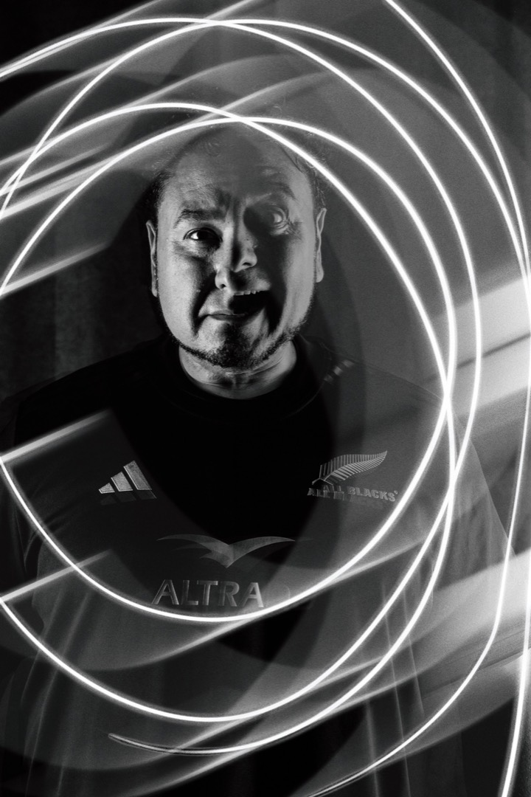

Co-founder · Advisor
Chris Silva
Chris Silva is a fine art photographer and visual arts educator based in Santa Maria, California. He teaches Photography and Digital Arts at Pioneer Valley High School from Room 322. Working mostly in black and white, across film, digital, and hybrid workflows, he makes documentary work, environmental portraits, and experimental images rooted in place and lived experience.
His story with light began with a Nikon F3, “The Spirit Box,” placed in his hands by his uncle, a proud member of the Yaqui Nation. Chris studied Applied Arts and Design at Allan Hancock College and earned a BA in Photography from Southern New Hampshire University. He co-owns Cris & Laura Inspired EYE Images and believes a photograph should invite reflection and stand up to time.